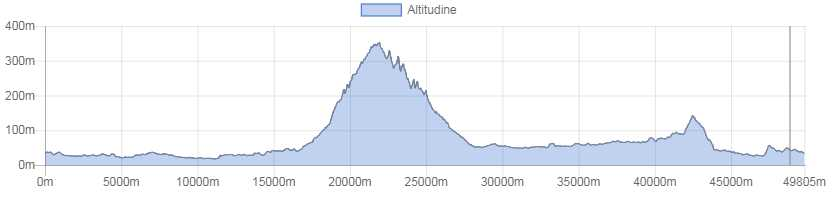

<!doctype html>
<html class="no-js" lang="en" dir="ltr">
  <head>
    <meta charset="utf-8">
    <meta http-equiv="x-ua-compatible" content="ie=edge">
    <meta name="viewport" content="width=device-width, initial-scale=1.0">
    <title>Foundation for Sites</title>
    <link rel="stylesheet" href="css/foundation.css">
    <link rel="stylesheet" href="css/app.css">
  </head>
  <style type="text/css">
  
  
h1.blu {
background-color: #2b3d51;
color: white;
font-size: 1.75rem; 
}

h1.verde {
background-color: #069345;
color: white;
font-size: 1rem; 
}


h1.bianco {
background-color: white;
color: #506487;
font-size: 1rem; 
}
</style>
  <body>
    <div class="grid-container">
      <div class="grid-x grid-padding-x">
        <div class="large-12 cell">
          <h1 class="verde">&nbsp;</h1>
        </div>
      </div>
      
       <div class="grid-x grid-padding-x">
        <div class="large-12 cell">
          
        </div>
      </div>
      
      <div class="grid-x grid-padding-x">
        <div class="large-12 cell">
          <h1 class="blu">&nbsp;Lamporecchio-Porciano-Papiano-Lamporecchio</h1>
        </div>
      </div>
      
      <div class="grid-x grid-padding-x">
        <div class="large-12 cell">
          <h1 class="bianco"><b>&nbsp;Lamporecchio-Porciano-Papiano-Lamporecchio</b></h1>
        </div>
      </div>
      
       <div class="grid-x grid-padding-x">
        <div class="large-12 cell">
        <table>
        <tr>
        <td><b>Adatto per</B></td>
        <td>Trekking, Running, Mtb</td>
        </tr>
        
        <tr>
        <td><b>Lunghezza</B></td>
        <td>9 Km</td>
        </tr>
        
        <tr>
        <td><b>Dislivello</B></td>
        <td>180 m</td>
        </tr>

        <tr>
        <td><b>Periodo consigliato</B></td>
        <td>All year</td>
        </tr>

        <tr>
        <td><b>Tipo di fondo</B></td>
        <td>unpaved road, path</td>
        </tr>
        
        <tr>
        <td><b>Descrizione</B></td>
        <td>From the church of Saint Stefano reach “via Vitoni” and then the crossroads: take “via Orbignanese” and follow the road downhill, until you pass a small bridge. At the next crossroads with “via del Lavoro”, turn left and follow uphill the tarmacked road. Take “via Greppiano” (60 m a.s.l.) on the left: along the way you’ll find a small chapel, a bridge and then the road curves to the right. At the fork keep to the left: the road starts going uphill. After you pass a small group of houses the road forks again: keep to the left. After you walked along  Balduccio House (150 m a.s.l.), you’ll find a stately holm oak tree and a tabernacle: go straight on and uphill until you reach another tabernacle at Fattoio (215 m a.s.l.). Follow “via di Lampaggio” uphill until you find a small hamlet. Pass the hamlet and take the “sentiero del Saletto” on your left: this path passes along the back property of the last house on “via di Lampaggio” and then it continues into the woods. Halfway along the trail you’ll find another tabernacle. Follow the path until you get to the medieval hamlet of Porciano (250 m a.s.l.). After a visit to the Church of San Giorgio, a very scenic place, and to the hamlet, reach the provincial road SP9 and follow it in the direction of San Baronto – Pistoia. Along the way you’ll find Rimaggio’s Mill and then Villa Merrick in Papiano. Take”via Vecchia Maremmana” on your left and then “Strada Vicinale delle Due Fontane” until you reach “via Ceppeto”. Turn right. At the fork keep to the left and follow “via Capalle” downhill. When you find again “via Orbignanese”, turn right and you’ll reach the church of Saint Stefano, the starting point.
</td>
        </tr>
        
        
        <tr>
        <td><b>Informazioni sul percorso:</B></td>
        <td>Church of  Lamporecchio, landscape and natural aspects, medioeval towers , Church of Porciano, Rimaggio’s Mill, Villa Merrick in Papiano
</td>
        </tr>

       
       <tr>
        <td><b>Dove dormire</B></td>
        <td><a href="http://www.visitlamporecchio.it/en/where-to-sleep/">Link</a></td>
        </tr>
        
        
        <tr>
        <td><b>Dove mangiare</B></td>
        <td><b><u>Lamporecchio:</u></b><br><br>


Ristorante Atman - Via Borghetto, 1 - tel. +39 0573 803432<br> 
Facebook: Ristorante Atman a Villa Rospigliosi<br>
www.atmanvillarospigliosi.it<br><br>

Ristorante Blu Marlin – piazza Francesco Berni, 13 – tel. +39 345 307 8958<br>
Facebook: Ristorante Blu Marlin<br>          
www.blumarlin-lamporecchio.it<br><br>

Agriturismo Cocò - Via Borghetto 26 – tel. +39  0573 172 9919<br> 
Facebook: Agriturismo Cocò<br><br>

Ristorante Pizzeria Il Canniccio - Via della Costituzione, 1 – tel. +39 0573 82192<br>
Facebook: Pizzeria Il Canniccio<br><br>

Ristorante Pizzeria Il Mestolo - Via Verdi, 8/B - tel. +39 0573 803163<br>
Facebook: Il Mestolo Ristorante Toscano- Lamporecchio PT<br><br>

Ristorante Pizzeria In Vino Veritas - Via Aldo Moro, 36/A – tel. +39 0573 803666<br>
Facebook: In Vino Veritas di Morelli Marta<br><br>

Osteria Macelleria La Cicceria – Via Martiri del Padule, 202-204 - tel. +39 0573 1723286<br>
Facebook: La Cicceria   <br>   
www.lacicceria.it<br><br>

Pizzeria La Perla del Bosco - Via Martiri del Padule, 212 – tel. +39 0573 82757<br>
Facebook:Bar La Perla del Bosco<br><br>

Pizzeria La Pergola - Via Antonio Gramsci, 48 - tel. +39 0573 81600<br>
Facebook: Pizzeria La Pergola Lamporecchio<br><br>

Ristorante Masetto da Lamporecchio 2.0 – piazza Falcone, 2 – tel. +39 0573 179 8134 <br>
Facebook: Masetto da Lamporecchio 2.0<br><br>


<b><u>San Baronto:</b></u><br><br>

Ristorante Pizzeria Barco Reale Vinoteca - Via Nardini, 13 - tel. +39 0573 88253<br>
Facebook: Barco Reale Vinoteca<br>    
www.barcorealevinoteca.it<br><br>

Agriristorante BBQ Meat – Ciccia alla brace - Via Nardini, 13/G –  tel. +39 0573 88197 <br>
Facebook: Agriristorante BBQ Meat – ciccia alla brace<br><br>

Osteria Pizzeria Albergo Bellavista - Via Montalbano, 61 – tel. +39 0573 88014<br>
Facebook: Bellavista San Baronto<br>
www.albergo-bellavista.com<br><br>

Osteria Bichi – Agriturismo La Carraia - Via Giugnano, 107 - tel. +39 0573 88248<br>
www.agriturismolacarraia.it<br><br> 

Agriturismo Borgo La Casetta - Via della Casetta, 8 - tel. +39 0573 88328<br>
Facebook: Borgo La Casetta<br>
www.borgolacasetta.it<br><br>

Ristorante Pizzeria Da Marcellino- Via Montalbano, 28 - tel. +39 0573 88025<br>
Facebook: Da Marcellino<br><br>

Ristorante Pizzeria I Golosi - Via Nardini, 3 - tel. +39 0573 856067<br>
Facebook: I Golosi<br><br>

Ristorante Enoteca L’Indicatore - Via Montalbano 71 - tel. +39 0573 856049<br>
Facebook: Bar Enoteca L’Indicatore<br><br>

Agriturismo La Dispensa - Via Giugnano, 83 - tel. +39 393 904 4793<br>
Facebook: La Dispensa <br><br>

Agriturismo Le Due Forre - Via Montalbano, 138 - tel. +39 0573 88373<br>
Facebook: Agriturismo Le Due Forre<br><br>

Ristoro Montalbano 48 - Via Montalbano, 48 - tel. +39 3338485631<br><br>

Ristorante Albergo Monti - Via della Chiesa, 2 – tel. +39 0573 88416<br>
Facebook: Hotel Monti<br>   www.hotelmonti.com<br><br>

Ristorante Pizzeria Versilia Com’era - Via San Giuseppe 13 - tel. +39 0573 88460<br>
Facebook: Versilia Com’era<br><br>

Osteria Pizzeria Victoria - Via Montalbano, 43 - tel. +39 0573 88032<br>
Facebook: Pizzeria Ristorante Victoria<br><br>

<b><u>Mastromarco:</b></u><br><br>

Pizzeria Amici Miei – Via Palmiro Togliatti, 373 – tel. +39 0573 81272<br>
Facebook: Amici Miei<br>   www.pizzeriaamicimiei.com<br>	   
</td>
        </tr>
        
        
        </table>
        
        </div>
      </div>
      
      <div class="responsive-embed">
                <iframe width="420" height="315" src="http://c1p81.altervista.org/montecatini/sentieri/monte_iride.html" frameborder="0" allowfullscreen></iframe>
        </div>
        
        
  
   <!-- 
   <div class="grid-x grid-padding-x">
        <div class="large-12 cell"><center>
          </center>
        </div>
      </div>
      -->
        
    
     

     
    </div>

    <script src="js/vendor/jquery.js"></script>
    <script src="js/vendor/what-input.js"></script>
    <script src="js/vendor/foundation.js"></script>
    <script src="js/app.js"></script>
  </body>
</html>
